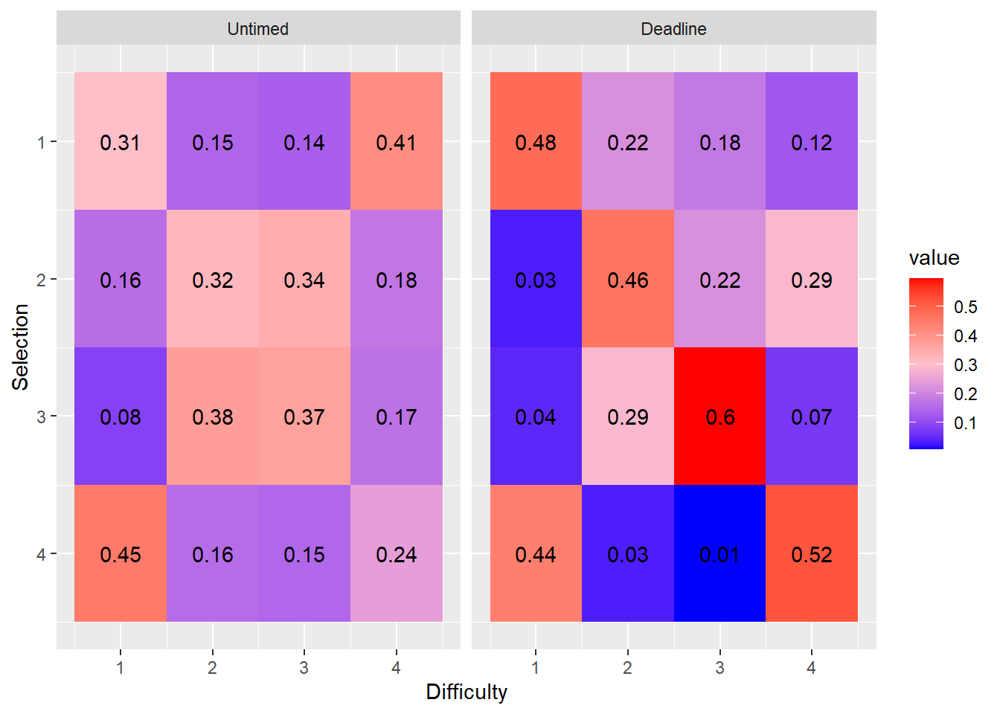
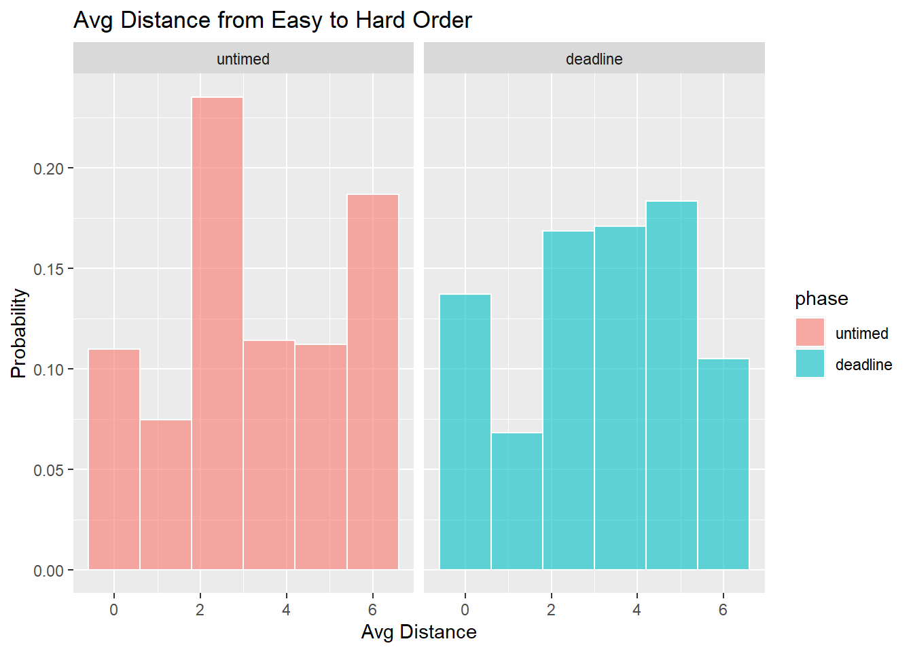
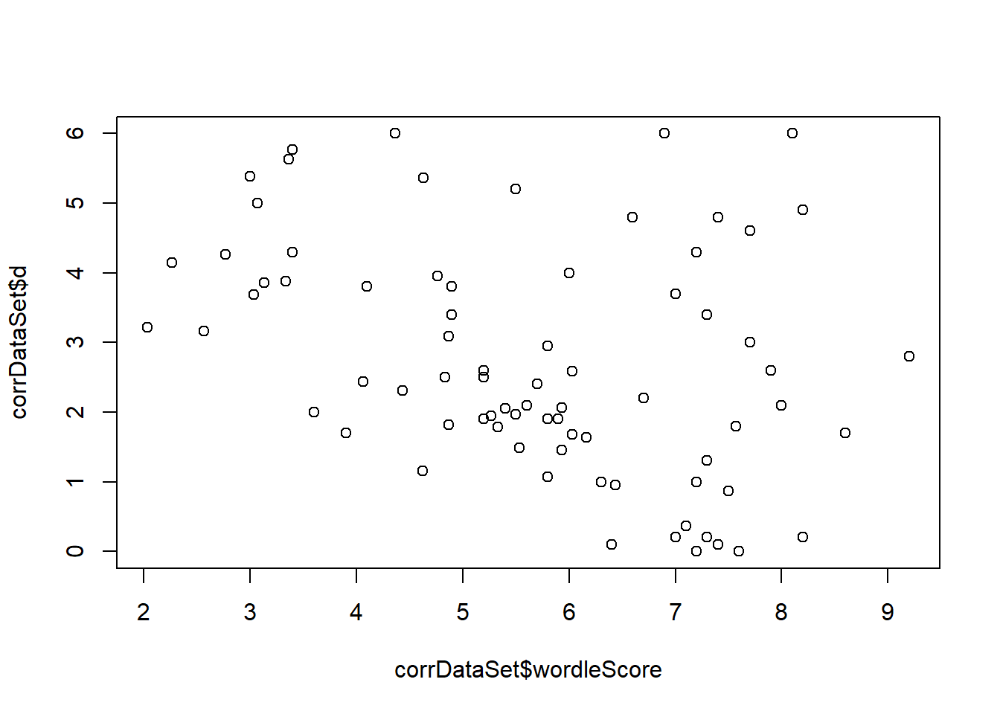
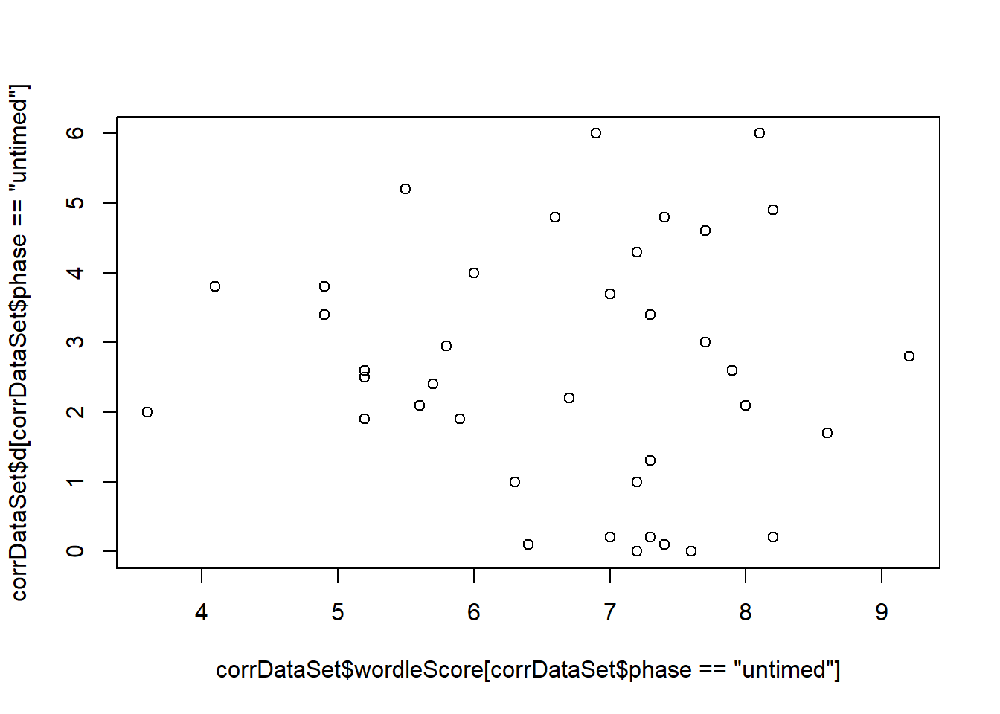
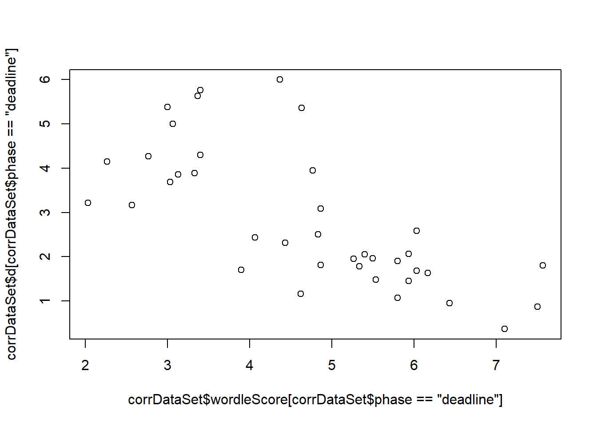
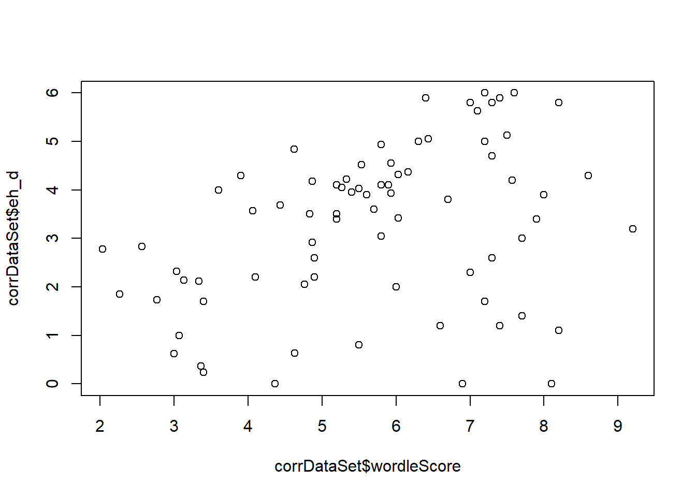

2022 Schedule RT - Experiment 8d: Labelled Word List Typing, 4 Tasks - Wordle Reward - Keyboard
knowlabUnimelb
2022-04-10
Last updated: 2022-11-09
Checks: 7 0
Knit directory: SCHEDULING/
This reproducible R Markdown analysis was created with workflowr (version 1.7.0). The Checks tab describes the reproducibility checks that were applied when the results were created. The Past versions tab lists the development history.
Great! Since the R Markdown file has been committed to the Git repository, you know the exact version of the code that produced these results.
Great job! The global environment was empty. Objects defined in the global environment can affect the analysis in your R Markdown file in unknown ways. For reproduciblity it’s best to always run the code in an empty environment.
The command set.seed(20221107) was run prior to running
the code in the R Markdown file. Setting a seed ensures that any results
that rely on randomness, e.g. subsampling or permutations, are
reproducible.
Great job! Recording the operating system, R version, and package versions is critical for reproducibility.
Nice! There were no cached chunks for this analysis, so you can be confident that you successfully produced the results during this run.
Great job! Using relative paths to the files within your workflowr project makes it easier to run your code on other machines.
Great! You are using Git for version control. Tracking code development and connecting the code version to the results is critical for reproducibility.
The results in this page were generated with repository version 67e1aac. See the Past versions tab to see a history of the changes made to the R Markdown and HTML files.
Note that you need to be careful to ensure that all relevant files for
the analysis have been committed to Git prior to generating the results
(you can use wflow_publish or
wflow_git_commit). workflowr only checks the R Markdown
file, but you know if there are other scripts or data files that it
depends on. Below is the status of the Git repository when the results
were generated:
Ignored files:
Ignored: .Rproj.user/
Ignored: analysis/patch_selection.png
Ignored: analysis/patch_selection_8.png
Ignored: analysis/patch_selection_avg.png
Ignored: analysis/site_libs/
Untracked files:
Untracked: analysis/Notes.txt
Untracked: analysis/archive/
Untracked: analysis/fd_pl.rds
Untracked: analysis/fu_pl.rds
Untracked: analysis/prereg/
Untracked: analysis/reward rate analysis.docx
Untracked: analysis/rewardRate.jpg
Untracked: analysis/toAnalyse/
Untracked: analysis/wflow_code_string.txt
Untracked: archive/
Untracked: data/archive/
Untracked: data/create_database.sql
Untracked: data/dataToAnalyse/
Untracked: data/exp6a_typing_exponential.xlsx
Untracked: data/exp6b_typing_linear.xlsx
Untracked: data/rawdata_incEmails/
Untracked: data/sona data/
Untracked: data/summaryFiles/
Untracked: models/
Untracked: old Notes on analysis.txt
Untracked: presentations/
Untracked: references/
Untracked: spatial_pdist.Rdata
Unstaged changes:
Modified: data/README.md
Note that any generated files, e.g. HTML, png, CSS, etc., are not included in this status report because it is ok for generated content to have uncommitted changes.
These are the previous versions of the repository in which changes were
made to the R Markdown
(analysis/analysis_exp8d_typing_reward_keyboard.Rmd) and
HTML (docs/analysis_exp8d_typing_reward_keyboard.html)
files. If you’ve configured a remote Git repository (see
?wflow_git_remote), click on the hyperlinks in the table
below to view the files as they were in that past version.
| File | Version | Author | Date | Message |
|---|---|---|---|---|
| Rmd | 67e1aac | knowlabUnimelb | 2022-11-09 | Publish data and analysis files |
Asha Bartlett1, Ami Eidels2, and Daniel R. Little1 1 The University of Melbourne, 2 The University of Newcastle
Method
Participants
[NEED TO ADD A SUMMARY OF PARTICIPANT INFORMATION: HOW MANY TESTED, DEMOGRAPHIC INFORMATION, HOW WERE PARTICIPANTS REIMBURSED, HOW MANY ASSIGNED TO EACH CONDITION]
Design
[NEED TO ADD A DESCRIPTION OF THE EXPERIMENTAL DESIGN]
Data Cleaning
Subjects completed the experiment by clicking a link with the uniquely generated id code. Subjects were able to use the link multiple times; further, subjects were able to exit the experiment at any time. Consequently, the datafile contains partially completed data for some subjects which needed to be identified and removed.
Data Analysis
We first summarize performance by answering the following questions:
Task completions
- How many tasks are completed on average?
[ADD ANALYSIS DESCRIPTION]
| phase | mean |
|---|---|
| untimed | 3.989474 |
| deadline | 2.718310 |
[ADD DESCRIPTION OF ANALYSIS OF TASK COMPLETIONS]
Typing analysis
| length | phase | acc | rt | wpm | totalTime |
|---|---|---|---|---|---|
| 1 | untimed | 0.96 | 185 | 72 | 1035 |
| 2 | untimed | 0.96 | 206 | 72 | 2654 |
| 3 | untimed | 0.95 | 216 | 72 | 4511 |
| 4 | untimed | 0.94 | 222 | 71 | 6413 |
| 1 | deadline | 0.95 | 184 | 78 | 1056 |
| 2 | deadline | 0.94 | 197 | 78 | 2717 |
| 3 | deadline | 0.93 | 187 | 80 | 3996 |
| 4 | deadline | 0.93 | 204 | 76 | 5923 |
| length | phase | acc | rt | wpm | totalTime |
|---|---|---|---|---|---|
| 1 | untimed | 0 | 4.7 | 1.06 | 35 |
| 2 | untimed | 0 | 4.3 | 1.06 | 62 |
| 3 | untimed | 0 | 4.4 | 1.05 | 127 |
| 4 | untimed | 0 | 4.2 | 1.05 | 165 |
| 1 | deadline | 0 | 9.8 | 0.65 | 61 |
| 2 | deadline | 0 | 3.5 | 0.73 | 75 |
| 3 | deadline | 0 | 2.9 | 0.67 | 89 |
| 4 | deadline | 0 | 2.5 | 0.70 | 92 |
ANOVA Table (type III tests)
$ANOVA Effect DFn DFd F p p<.05 ges 1 phase 1 36 0.56 4.6e-01 0.00044 2 length 3 108 13.27 1.9e-07 * 0.03000 3 phase:length 3 108 1.66 1.8e-01 0.00300
$Mauchly's Test for Sphericity Effect W p p<.05 1
length 0.36 1.1e-06 2 phase:length 0.50 2.4e-04
$Sphericity Corrections Effect GGe DF[GG] p[GG]
p[GG]<.05 HFe DF[HF] p[HF] 1 length 0.6 1.81, 65.01 2.8e-05 * 0.63
1.9, 68.24 1.9e-05 2 phase:length 0.7 2.11, 75.99 2.0e-01 0.75 2.25,
80.85 1.9e-01 p[HF]<.05 1 * 2
ANOVA Table (type III tests)
$ANOVA Effect DFn DFd F p p<.05 ges 1 phase 1 36 32.7 1.7e-06 * 0.066 2 length 3 108 7.9 8.7e-05 * 0.058 3 phase:length 3 108 1.5 2.2e-01 0.009
$Mauchly's Test for Sphericity Effect W p p<.05 1
length 0.68 0.019 * 2 phase:length 0.78 0.122
$Sphericity Corrections Effect GGe DF[GG] p[GG]
p[GG]<.05 HFe DF[HF] p[HF] 1 length 0.80 2.39, 85.96 0.00034 * 0.86
2.57, 92.49 0.00023 2 phase:length 0.85 2.55, 91.76 0.22900 0.92 2.76,
99.34 0.22600 p[HF]<.05 1 * 2
ANOVA Table (type III tests)
$ANOVA Effect DFn DFd F p p<.05 ges 1 phase 1 36 18.5 1.2e-04 * 5.0e-03 2 length 3 108 31.7 8.8e-15 * 2.2e-04 3 phase:length 3 108 7.8 9.2e-05 * 5.3e-05
$Mauchly's Test for Sphericity Effect W p p<.05 1
length 0.86 0.413
2 phase:length 0.76 0.096
$Sphericity Corrections Effect GGe DF[GG] p[GG]
p[GG]<.05 HFe DF[HF] p[HF] 1 length 0.92 2.77, 99.79 7.9e-14 * 1.01
3.03, 108.95 8.8e-15 2 phase:length 0.85 2.54, 91.57 2.5e-04 * 0.92
2.75, 99.12 1.6e-04 p[HF]<.05 1 2
ANOVA Table (type III tests)
$ANOVA Effect DFn DFd F p p<.05 ges 1 phase 1 36 6.6e-04 9.8e-01 6.8e-07 2 length 3 108 3.0e+02 7.2e-52 * 6.8e-01 3 phase:length 3 108 1.6e+00 1.9e-01 3.0e-03
$Mauchly's Test for Sphericity Effect W p p<.05 1
length 0.08 2.2e-17 2 phase:length 0.38 2.4e-06
$Sphericity Corrections Effect GGe DF[GG] p[GG]
p[GG]<.05 HFe DF[HF] p[HF] 1 length 0.43 1.28, 45.97 1.7e-23 * 0.43
1.3, 46.91 6.2e-24 2 phase:length 0.65 1.95, 70.36 2.1e-01 0.69 2.07,
74.35 2.1e-01 p[HF]<.05 1 * 2
Reward Rate
[ADD DESCRIPTION]
 ANOVA
Table (type III tests)
ANOVA
Table (type III tests)
$ANOVA Effect DFn DFd F p p<.05 ges 1 phase 1 36 0.18 6.7e-01 8.4e-05 2 difficulty 3 108 327.13 5.0e-54 * 7.1e-01 3 phase:difficulty 3 108 1.04 3.8e-01 1.0e-03
$Mauchly's Test for Sphericity Effect W p p<.05 1
difficulty 0.022 9.8e-27 2 phase:difficulty 0.245 2.4e-09
$Sphericity Corrections Effect GGe DF[GG] p[GG]
p[GG]<.05 HFe DF[HF] p[HF] 1 difficulty 0.39 1.16, 41.85 1.9e-22 *
0.39 1.18, 42.38 1.0e-22 2 phase:difficulty 0.61 1.84, 66.28 3.5e-01
0.64 1.94, 69.68 3.6e-01 p[HF]<.05 1 * 2
Pairwise comparisons using t tests with pooled SD data: rrdata\(rewardRate and paste(rrdata\)difficulty, rrdata$phase)
long deadline long untimed med deadline med untimedlong untimed 1 - - -
med deadline 6e-12 2e-10 - -
med untimed 1e-10 2e-09 1 -
short deadline <2e-16 <2e-16 7e-06 7e-07
short untimed <2e-16 <2e-16 2e-05 2e-06
v.long deadline 3e-04 2e-05 <2e-16 <2e-16
v.long untimed 3e-04 2e-05 <2e-16 <2e-16
short deadline short untimed v.long deadline long untimed - - -
med deadline - - -
med untimed - - -
short deadline - - -
short untimed 1 - -
v.long deadline <2e-16 <2e-16 -
v.long untimed <2e-16 <2e-16 1
P value adjustment method: bonferroni
Optimality in each condition
- What is the proportion of easy, medium, hard, and very hard tasks selected first, second, third or fourth? [ADD DESCRIPTION]

- Do the marginal distributions differ from uniformity?
We tested whether the marginal distributions were different from uniformly random selection using the fact that the mean rank is distributed according to a \(\chi^2\) distribution with the following test-statistic: \[\chi^2 = \frac{12N}{k(k+1)}\sum_{j=1}^k \left(m_j - \frac{k+1}{2} \right)^2\] see (Marden, 1995).
| phase | chi2 | df | p |
|---|---|---|---|
| untimed | 23 | 3 | 0 |
| deadline | 259 | 3 | 0 |
[ADD DESCRIPTION]
We compared the location conditions and phases using chi-2 analysis.
| Comparison | chi2 | df | p | |
|---|---|---|---|---|
| X-squared | Untimed vs Deadline | 162 | 15 | 0 |
- How optimal were responses?

Comparison against Easy to Hard order
- How consistent were responses with an easy to hard ordering?

Wordle-Clue Score Analysis
- How motivated are participants to get the Wordle-Clue guess correct?
Wordle guesses are scored out of 10. A match-in-place is scored 2; a match-out-of-place is scored 1. The final score for each trial is the sum across all letters.
| phase | score |
|---|---|
| untimed | 6.7 |
| deadline | 4.7 |
Df Sum Sq Mean Sq F value Pr(>F) phase 1 75.9 75.9 40.2 1.6e-08 *** Residuals 74 139.7 1.9
— Signif. codes: 0 ‘’ 0.001 ’’ 0.01 ’’ 0.05
‘.’ 0.1 ’ ’ 1
- What is the correlation between the Wordle-Clue score and the distance from the optimal schedule? From the easy-hard schedule?
This test indicates whether participants who are more motivated to score highly on the wordle test are also more likely to selection optimal schedules. This would be indicated by a significant correlation (high wordle score coupled with a low average distance). We also test the same wordle score compared to the easy-hard schedule.
[1] -0.36
Pearson's product-moment correlationdata: corrDataSet\(wordleScore and corrDataSet\)d t = -3, df = 74, p-value = 0.002 alternative hypothesis: true correlation is not equal to 0 95 percent confidence interval: -0.54 -0.14 sample estimates: cor -0.36
[1] -0.069
Pearson's product-moment correlationdata: corrDataSet\(wordleScore[corrDataSet\)phase == “untimed”] and corrDataSet\(d[corrDataSet\)phase == “untimed”] t = -0.4, df = 36, p-value = 0.7 alternative hypothesis: true correlation is not equal to 0 95 percent confidence interval: -0.38 0.26 sample estimates: cor -0.069
[1] -0.71
Pearson's product-moment correlationdata: corrDataSet\(wordleScore[corrDataSet\)phase == “deadline”] and corrDataSet\(d[corrDataSet\)phase == “deadline”] t = -6, df = 36, p-value = 5e-07 alternative hypothesis: true correlation is not equal to 0 95 percent confidence interval: -0.84 -0.51 sample estimates: cor -0.71
[1] 0.36
Pearson's product-moment correlationdata: corrDataSet\(wordleScore and corrDataSet\)eh_d t = 3, df = 74, p-value = 0.002 alternative hypothesis: true correlation is not equal to 0 95 percent confidence interval: 0.14 0.54 sample estimates: cor 0.36
sessionInfo()R version 4.1.3 (2022-03-10)
Platform: x86_64-w64-mingw32/x64 (64-bit)
Running under: Windows 10 x64 (build 19042)
Matrix products: default
locale:
[1] LC_COLLATE=English_Australia.1252 LC_CTYPE=English_Australia.1252
[3] LC_MONETARY=English_Australia.1252 LC_NUMERIC=C
[5] LC_TIME=English_Australia.1252
attached base packages:
[1] stats4 grid stats graphics grDevices utils datasets
[8] methods base
other attached packages:
[1] pmr_1.2.5.1 jpeg_0.1-9 rstatix_0.7.0 lme4_1.1-29
[5] Matrix_1.4-0 png_0.1-7 reshape2_1.4.4 knitr_1.38
[9] hrbrthemes_0.8.0 english_1.2-6 gtools_3.9.2 DescTools_0.99.45
[13] forcats_0.5.1 stringr_1.4.0 dplyr_1.0.8 purrr_0.3.4
[17] readr_2.1.2 tidyr_1.2.0 tibble_3.1.6 ggplot2_3.3.5
[21] tidyverse_1.3.1 workflowr_1.7.0
loaded via a namespace (and not attached):
[1] minqa_1.2.4 colorspace_2.0-3 ellipsis_0.3.2 class_7.3-20
[5] rprojroot_2.0.3 fs_1.5.2 gld_2.6.5 rstudioapi_0.13
[9] proxy_0.4-27 farver_2.1.0 fansi_1.0.3 mvtnorm_1.1-3
[13] lubridate_1.8.0 xml2_1.3.3 splines_4.1.3 extrafont_0.18
[17] rootSolve_1.8.2.3 jsonlite_1.8.0 nloptr_2.0.0 broom_0.8.0
[21] Rttf2pt1_1.3.10 dbplyr_2.1.1 compiler_4.1.3 httr_1.4.2
[25] backports_1.4.1 assertthat_0.2.1 fastmap_1.1.0 cli_3.2.0
[29] later_1.3.0 htmltools_0.5.2 tools_4.1.3 gtable_0.3.0
[33] glue_1.6.2 lmom_2.9 Rcpp_1.0.8.3 carData_3.0-5
[37] cellranger_1.1.0 jquerylib_0.1.4 vctrs_0.4.1 nlme_3.1-155
[41] extrafontdb_1.0 xfun_0.30 ps_1.6.0 rvest_1.0.2
[45] lifecycle_1.0.1 getPass_0.2-2 MASS_7.3-55 scales_1.2.0
[49] hms_1.1.1 promises_1.2.0.1 expm_0.999-6 yaml_2.3.5
[53] Exact_3.1 gdtools_0.2.4 sass_0.4.1 stringi_1.7.6
[57] highr_0.9 e1071_1.7-11 boot_1.3-28 rlang_1.0.2
[61] pkgconfig_2.0.3 systemfonts_1.0.4 evaluate_0.15 lattice_0.20-45
[65] labeling_0.4.2 processx_3.5.3 tidyselect_1.1.2 plyr_1.8.7
[69] magrittr_2.0.3 R6_2.5.1 generics_0.1.2 DBI_1.1.2
[73] pillar_1.7.0 haven_2.5.0 whisker_0.4 withr_2.5.0
[77] abind_1.4-5 modelr_0.1.8 crayon_1.5.1 car_3.0-12
[81] utf8_1.2.2 tzdb_0.3.0 rmarkdown_2.13 readxl_1.4.0
[85] data.table_1.14.2 callr_3.7.0 git2r_0.30.1 reprex_2.0.1
[89] digest_0.6.29 httpuv_1.6.5 munsell_0.5.0 bslib_0.3.1